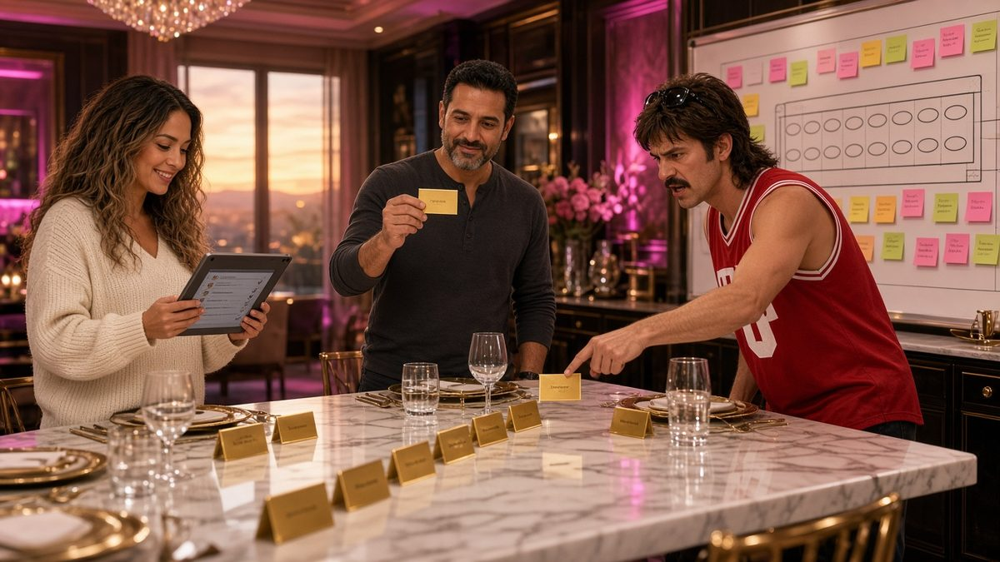
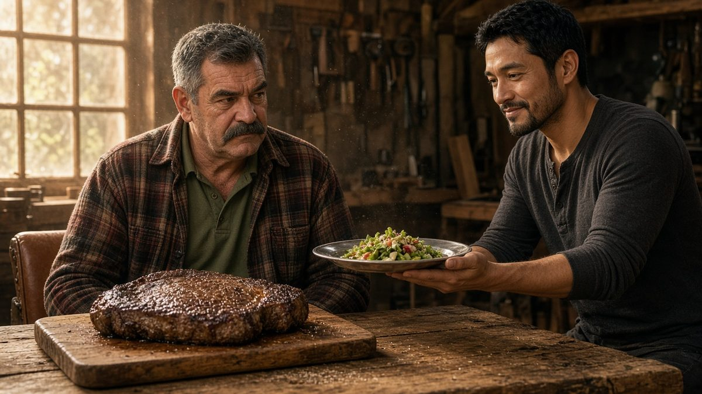

Pilot: Twenty-One Seats
Sami announces the 21 Million Dinner: one table, twenty-one seats, a crew of twenty-nine.
Kenny wants the head of the table, Ron wants a steak and silence, and Sami wants everyone to stop texting him.
Cold Open
7:02 AM. Sami stands in his kitchen, shaker bottle in hand, staring at a smart fridge that reads UPDATE REQUIRED. His protein is inside. The fridge will not open.

Sami I own a cold wallet I can open in the dark. I cannot open a fridge.
His phone buzzes. Then again. Forty-one unread messages, all with the same subject line: SEATING???
Scene 1 — The Chart
Sami's dining room. A marble table, twenty-one gold place cards, and a whiteboard that Juno has already color-coded.

Juno Pink is confirmed. Yellow is "confirmed, but emotionally." Green is Kernel, who RSVP'd with a Settings › path.
Kenny Powers enters without knocking, wearing a sleeveless jersey and sunglasses on his head.

Kenny Where's the head of the table?
Sami It's a round—
Kenny Then I'm the head of the round. Legends don't sit on the side, Sami. I've got rings nobody's even seen yet.
Juno Kenny, you're seat nine.
Kenny Nine is my jersey number now.

Scene 2 — The Menu
Ron's woodshop. Sawdust, amber light, and a steak the size of a hubcap. Sami carries a silver tray holding one small, beautiful salad.
Sami Tasting for the menu. Juno says we need a green option.

Ron No.
Sami It has bacon in it.
Ron Leave the bacon. Take the salad.
Sami sets the salad down, picks out the bacon, and slides it onto Ron's steak. Ron nods once. Sami has just been granted the rarest thing in the crew: Ron's RSVP.

Juno (on the phone) He said yes? To a party? Sami, you're a genius.
Cliffhanger
Back home, the fridge finally opens. Sami's phone lights up with a new RSVP.
@mourinho I accept. I will require two seats. One for me, and one for the referee I will blame when Kenny sits higher.
Sami looks at the board. Twenty-one seats. Twenty-two demands.
Sami Juno. Get the big marker.
Next time on Keeping Up with Sami: the seat-swap black market opens, and David calibrates the seating chart at Pride 175.